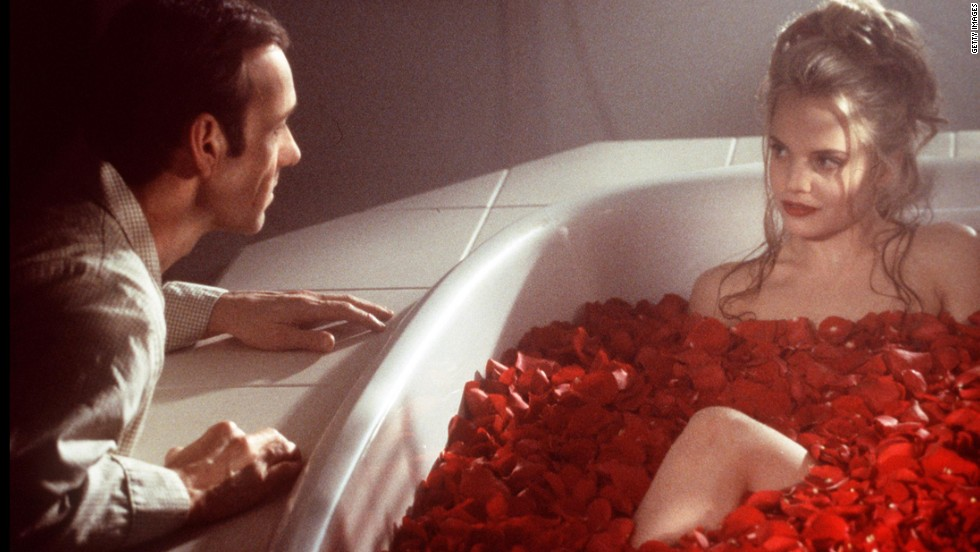

Filmogafía de Kevin Spacey
Inicio
Biografía
Filmografía
Premios
Kevin Spacey en Belleza Americana

Billionaire Boys Club (2016)
Nine Lives (2016)
Horrible Bosses 2 (2014)
House of Cards (U.S. TV series) (2013-presente)
Horrible Bosses (2011)
Margin Call (2011)
Casino Jack (2010)
Father of invention (2010)
La red social (2010; productor)
Los hombres que miraban fijamente a las cabras (2010)
Shrink (2009)
Moon (2009)
21 blackjack (2008)
Recuento (2008)
Fred Claus (2007)
Superman Returns (2006)
Ciudad sin ley (2005)
El mundo de Leland (2004)
Beyond the Sea (2004)
La vida de David Gale (2003)
Austin Powers in Goldmember (2002; cameo)
K-Pax (2001)
Atando cabos (2001)
La Clave del Éxito (2000)
Cadena de favores (2000)
Criminal y decente (2000)
El pez gordo (2000)
American Beauty (1999)
"Bichos: una aventura en miniatura" (1998)
The Negotiator (1998)
Hurlyburly (1998)
Medianoche en el jardín del bien y del mal (1997)
L. A. Confidential (1997)
Tiempo de matar (1996)
Looking for Richard (1996)
Sospechosos habituales (1995)
Se7en (1995)
Estallido / Epidemia (Outbreak) (1995)
Esto no es un secuestro (1994)
El factor sorpresa / (Swimming with sharks) (1994)
Voluntad de hierro (1994)
Glengarry Glen Ross (1992)
Dobles parejas (1992)
Bajo otra bandera (1990)
Henry y June (1990)
Ciegos, sordos y locos (1989)
Mi padre (1989)
Rocket Gibraltar (1988)
Armas de mujer (1988)
Se acabó el pastel (1986)